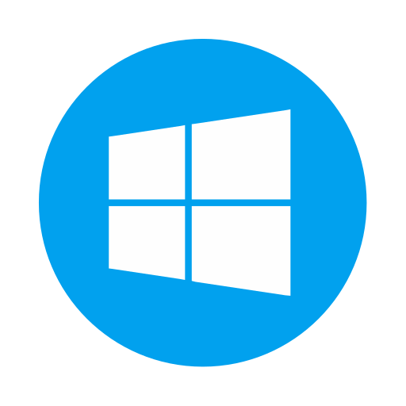

Windows
O Windows é um sistema operacional da Microsoft, conhecido por sua interface gráfica fácil de usar e ampla compatibilidade com softwares e jogos. É amplamente usado em computadores pessoais, empresas e escolas.
macOS
O macOS é o sistema da Apple para computadores Mac. Oferece desempenho estável, visual refinado e integração com outros dispositivos Apple como iPhone e iPad.
Linux
O Linux é um sistema operacional livre e de código aberto. É muito usado em servidores e também em desktops. É seguro, estável e altamente personalizável.